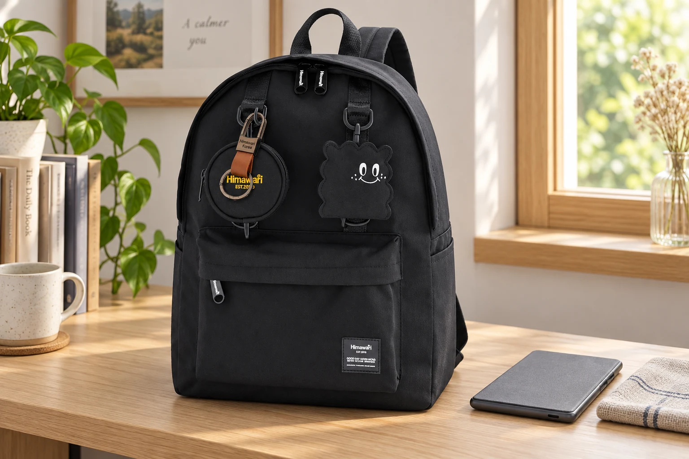

전자책 리더기를 챙기는 날: 짧은 독서를 위한 가방 속 자리

종이책 대신 전자책 리더기를 챙기면 이동 중 짧은 시간에도 읽던 페이지를 이어가기 편합니다. 작은 기기라 백팩의 빈 포켓 어디든 넣고 싶지만, 화면에 다른 물건이 닿는 자리와 꺼내기 편한 자리는 함께 살펴야 합니다. 오늘 읽을 순간을 떠올리고 기기가 들어갔다 돌아오는 길을 하나 정해보세요.
커버와 부착물을 포함한 크기
화면의 인치 수보다 평소 사용하는 상태의 바깥 크기를 확인합니다. 덮개, 손잡이 밴드, 펜이나 거치용 액세서리가 붙어 있다면 그 부분까지 포함하세요. 기기만 넣었을 때 맞는 포켓도 커버를 더하면 입구가 좁아질 수 있습니다. 액세서리의 탈착 여부는 제품 안내를 따르고, 포켓에 맞추려고 기기나 커버를 구부리지는 않습니다.
작은 물건의 돌출부를 떨어뜨리기
열쇠, 충전기 플러그, 둥근 물병이 화면 쪽 한 지점을 누르지 않도록 공간을 나눕니다. 얇은 천 주머니에 넣었다고 눌림까지 막아준다고 생각하지 마세요. 기기에 맞는 커버나 케이스를 사용한 상태에서, 다른 짐을 함께 넣고 닫을 때 압박이 생기는지 살펴봅니다. 별도 포켓이 있어도 지퍼를 닫으며 화면을 밀게 된다면 배치를 바꾸는 것이 좋습니다.
어떤 면이 닿는지 직접 확인
‘화면을 등 쪽으로’ 같은 한 가지 방향을 모든 백팩에 적용하기는 어렵습니다. 등판과 내부 칸의 구조, 함께 넣는 물건이 다르기 때문입니다. 빈 가방 안쪽을 보고 단단한 부품이나 돌출된 물건이 어디에 있는지 먼저 확인하세요. 기기를 넣은 뒤 다른 짐을 억지로 끼우지 않고, 꺼낼 때 가장자리를 안정적으로 잡을 공간도 남깁니다.
읽을 준비는 출발 전에 마치기
배터리와 오늘 읽을 책이 준비되어 있는지 집에서 확인합니다. 늘 쓰지 않는 두꺼운 충전기까지 함께 담기 전에 외출 시간과 필요한 구성을 판단하세요. 별도 케이블을 챙긴다면 기기와 같은 포켓에 느슨하게 밀어 넣지 말고 충전 소품을 모아두는 자리에 둡니다. 읽기 전에 가방 속 케이블을 풀어야 하는 일을 줄이는 간단한 준비입니다.
읽은 뒤에는 커버부터 닫기
안정적으로 앉을 수 있는 자리에서 기기를 꺼내고, 일어날 때는 기기 사용을 마친 뒤 커버나 케이스를 닫고 가방의 원래 칸에 넣습니다. 책갈피를 끼우듯 화면과 덮개 사이에 카드나 펜을 넣지 마세요. 기기와 물병을 동시에 손에 들고 가방을 닫기보다 순서를 나누면 동작이 편합니다. 급히 이동해야 한다면 기기를 먼저 보관하고 출발합니다.
가방을 바꿀 때도 같은 확인
작은 가방으로 옮기는 날에는 전에 쓰던 포켓 크기를 그대로 기대하지 않습니다. 케이스와 함께 들어가고 입구가 자연스럽게 닫히는지 다시 봅니다. No.0422 사진은 외관을 확인하는 예시이며, 모든 전자책 리더기의 수납을 보장하지 않습니다. 제품 상세의 실제 수납 정보와 사용하는 기기 크기를 대조하고, 보호 방법은 기기 제조사의 안내를 우선하세요.
참고·안내
- Himawari No.0422 제품 정보
- 실제 Himawari 제품 원본을 참조해 새로 만든 AI 연출 이미지입니다. 주변 소품은 상품에 포함되지 않으며 수납 용량을 보장하는 장면은 아닙니다.
자주 묻는 질문
작은 리더기는 앞주머니에 넣어도 되나요?
케이스를 포함한 크기, 다른 물건의 압력, 입구의 잠금 상태를 함께 확인해야 합니다. 작은 크기만으로 적합한 자리를 정할 수는 없습니다.
노트북 칸이 있으면 화면도 보호되나요?
수납칸이 나뉘어 있다는 사실만으로 보호 성능을 보장할 수 없습니다. 기기에 맞는 케이스와 제조사의 보관 안내를 함께 확인하세요.